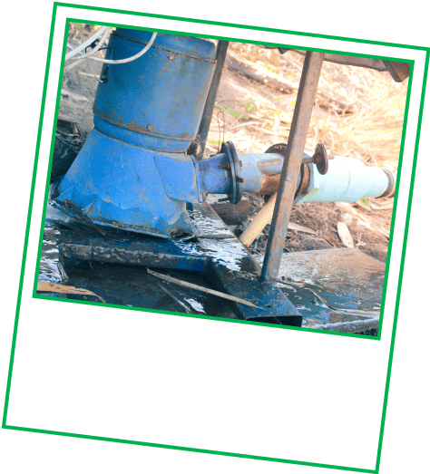

Punya 2 menit?
Lihat fakta-fakta mengejutkan ini (dan bagaimana Anda turut
membantu).
Setiap Rp200–Rp500 dari perjalanan atau pesanan Grab Anda akan
disalurkan ke proyek-proyek yang membantu Ibu Pertiwi.
Inilah yang terjadi saat Anda bergabung dengan Program Hijau kami:
Ubah uang receh Anda menjadi perubahan besar untuk bumi

Dukungan Anda membantu memulihkan
Pembangkit Listrik Mikrohidro Ciganas
I untuk menyediakan listrik bersih dan stabil bagi komunitas adat di
Taman Nasional Gunung Halimun Salak.
Ini juga membuktikan bahwa
energi bersih dapat menjangkau desa-desa terpencil di seluruh
Indonesia,
mengurangi kemiskinan dan ketergantungan pada bahan bakar
fosil.
Tahukah Anda?
Di beberapa daerah di Indonesia, sekolah-sekolah masih mengandalkan sungai untuk penerangan.

Pembangkit yang telah ditingkatkan ini kini menyuplai listrik ke
rumah, sekolah, klinik, dan menciptakan lapangan kerja!
Itulah mengapa kami mendukung
Proyek Katingan Mentaya,
yang melindungi dan memulihkan hutan gambut tropis di Kalimantan
Tengah.
Dengan melindungi hutan ini, kita mencegah pelepasan hampir
7.5 juta ton gas rumah kaca setiap tahun.
Ini adalah kemenangan besar bagi semua, baik yang tinggal di hutan
maupun tidak!
Tahukah Anda?
Setiap menit, kita kehilangan hutan seluas 10 lapangan sepak bola.
Hutan ini kaya akan kehidupan, menjadi rumah bagi lebih dari
5% populasi orangutan Kalimantan yang tersisa di dunia.

Tidak hanya itu.
Program Hijau juga mendukung Proyek Biochar Life Indonesia, yang
mengubah limbah pertanian menjadi biochar. Arang khusus ini mengunci
emisi karbon saat pembakaran, membantu membersihkan udara dan
melawan polusi.
Bisakah Anda menebak berapa banyak pohon yang telah ditanam sejauh
ini?
Kuis cepat.
Sejak 2021, pengguna Grab seperti Anda telah menjadi pelopor
konservasi hutan di seluruh Asia Tenggara.

1,2 juta pohon